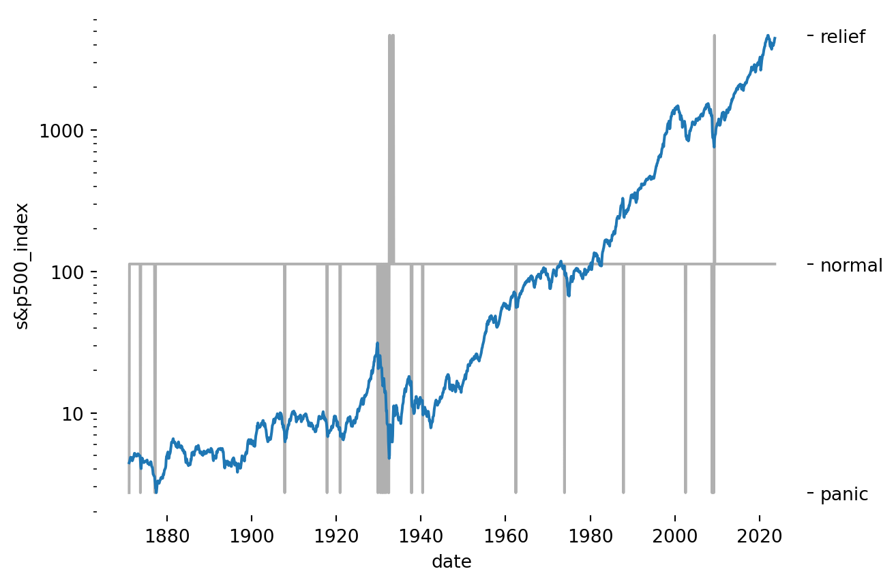
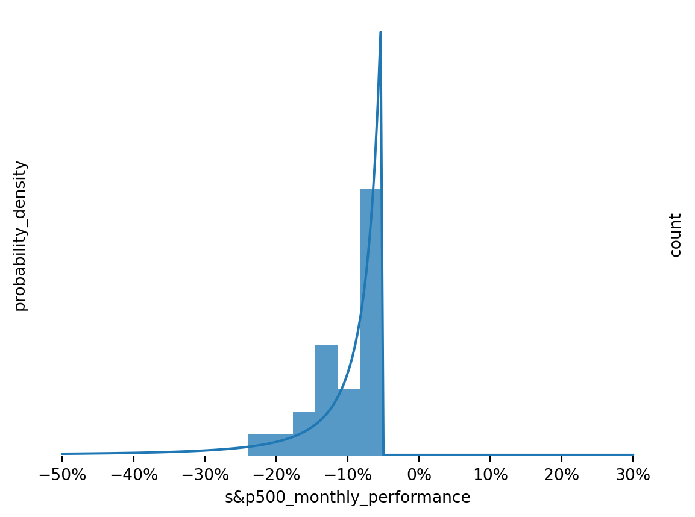
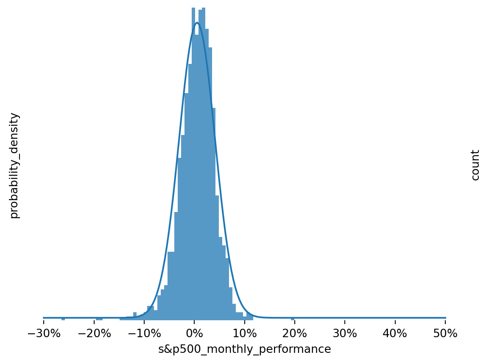
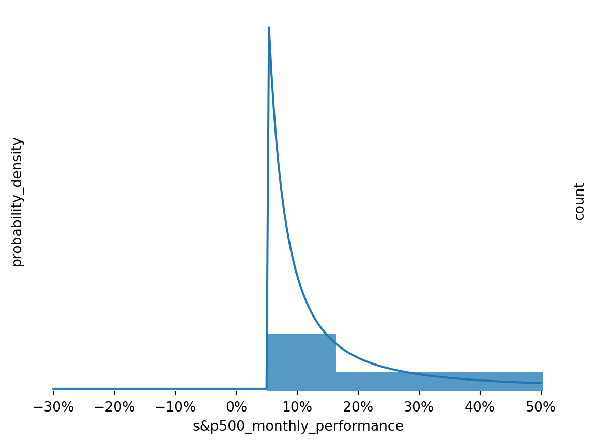
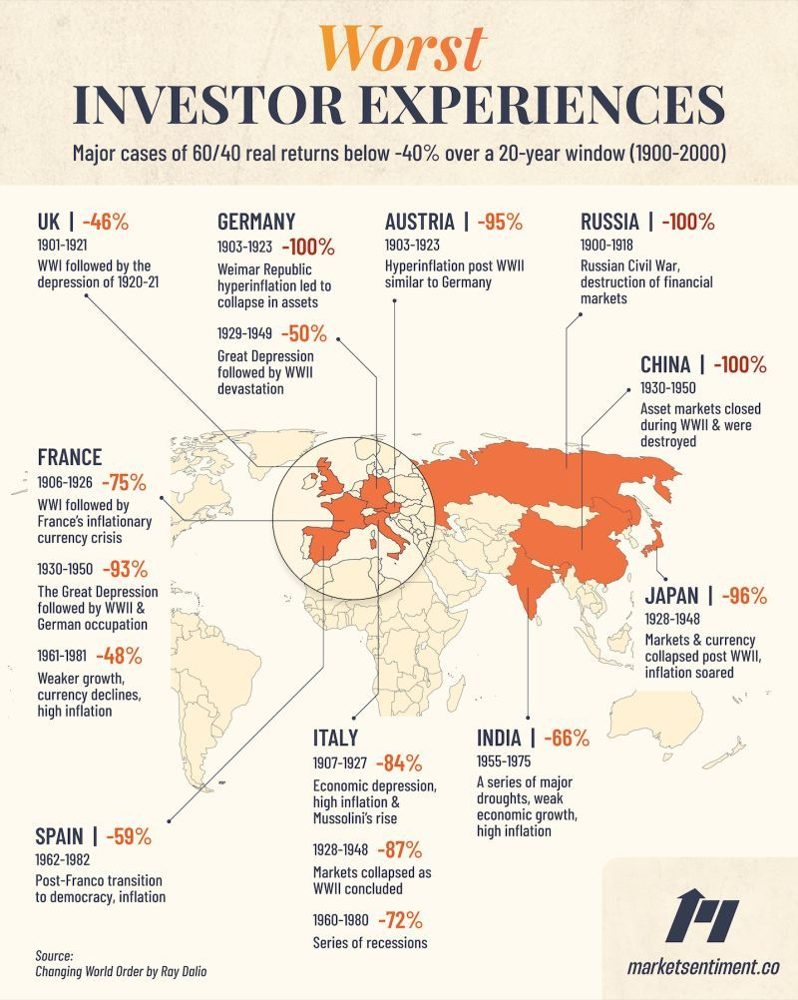

import matplotlib.pyplot as pltimport numpy as npimport pandas as pdimport scipy.stats as statsimport seaborn as snsfrom IPython.display import HTML, Markdown, displayfrom matplotlib.ticker import PercentFormatter, ScalarFormatterfrom tabulate import tabulatepalette = sns.color_palette()
Sometimes one model of the world won’t do. Often, we try to fit a well-known model to some observations we have made, and just doesn’t fit. Here we will look at the particular situation where observations are generated by several distributions using a mechanism known as a Hidden Markov Model (HMM).
Below, we will look at what a Hidden Markov Model is, with a basic example. Then we will create a model to simulate the S&P500. The model does a fairly good job of picking out the major panics of the past 150 years. Interestingly, it indicates that the chance of slipping into a panic in any given month over the period was about 1%. Finally, we will use the model to create some simulations, showing that these models have some advantages in being able to incorporate the risk of a severely negative event that Gaussian models by themselves cannot.
Hidden Markov Models
The idea is that the system we are trying to model has several states, and the distribution of observations varies depending on the state that the system is in. You could imagine a call center with a helpful and an unhelpful representative, the results of reaching one will be better than the results of reaching the other.
However, with Hidden Markov Models, it is not quite as easy as working with call center representatives, as we will not get to know who is on the other line. All we get are the results, and we have to try and piece together the details of which representative we got based on the outcomes we saw, and then try to model the distribution of outcomes for each of them.
Toy Example: Moody Dog
Say we have a dog, and that this dog eats more food when it’s happy. Let’s say the dog eats the following quantities (both assumed to be normally distributed):
When happy, the dog eats an average of 250g, with a standard deviation of 50g.
When sad, the dog eats an average of 150g, with a standard deviation of 30g.
The above distributions are known as emission probability distributions, modelling the emitted observation (how much the dog eats), based on the internal state of the dog (its mood).
We will model the mood of our dog (i.e. the dog’s state) as a Markov Process. By this, we just mean that the dog’s mood one day is dependent only on it’s mood the previous day. It does not matter if the dog was happy or sad on any of the days before that.
Our Markov Process has discrete time as we step from day to day, and a discrete and countable number of states, i.e. happy and sad. We will model our dog’s transition from day to day as follows:
Happy today:
70% chance of being happy tomorrow,
30% chance of being sad.
Sad today:
50% chance of being happy tomorrow,
50% chance of being sad.
We will write this as a matrix like so, where \(P_{ij}\) means the probability of going from row \(i\) to column \(j\), arranged so that row and column 0 represent “sad”, and row and column 1 represent “happy”.
We will assume that the initial probabilities are the steady state probabilities of the dog being either happy or sad, calculated as follows:
Code
transition_matrix = np.array([ [0.5, 0.5], [0.3, 0.7]])# Need left eigenvectorp = np.linalg.eig(transition_matrix.T).eigenvectors[:, 1]# Normalize so probabilities sum to one.initial_probabilities = p / np.sum(p)initial_probabilities
array([0.375, 0.625])
That means that in the long run, the dog is expected to be happy 62.5% of the time, and sad 37.5% of the time.
Knowing all this we can then simulate a few days and see how much the dog eats:
Figure 2: Probability Density Functions for Amounts Eaten by Dog (g) Based on Mood
In the figures above, we can see that there is some overlap between the amounts eaten when happy and when sad. Some days the dog will eat more when sad than it does on another day when happy. As good dog owners, we would know whether our dog is happy or not, but in general, we will not know the internal state of the system we are trying to model.
The unseen state is the “hidden” part of a Hidden Markov Model. There are some ways to estimate which state is generating the observations, and once we can estimate this, we can estimate parameters for the system and create simulations.
Something More Serious: Separating Stock Returns
Now we will look at something where we don’t know the underlying probability distributions: stock market returns. The reason these are interesting is that a plot of returns (daily, monthly etc.) looks like a Gaussian distribution, but big losses happen more frequently that would be expected under a Gaussian distribution of returns.
Data
The S&P 500 index price data was retrieved from Robert Shiller’s Online Data website, and contains a reconstituted time series back to 1871.
Figure 4: Distribution of the S&P 500 Index Monthly Performance
This shows that the distribution has a negative skew, with a visibly fat tail on the left side. The datapoint with a +50% performance would warrant a deeper review of the data if this analysis was being relied on in a meaningful way. It occurred in September 1932 in the dataset, but a google search did not provide a ready explanation.
Model Description
In the toy example above, we assumed that there were 2 states that the dog could be in, and each was associated with a different emission probability distribution. For stock returns, we will assume that there are 3 states:
Normal - This will be the case the majority of the time, characterized by a Gaussian distribution.
Relief - This will be a rare case, where large gains are made, characterized by a Pareto distribution. (I originally called this “euphoria”, but as we see below it usually happens during a pull back after a panic).
Panic - Another rare case, were large losses are made, characterized by a Pareto distribution.
Many people are familiar with the Gaussian Distribution, the classic “bell curve” with a mean and standard deviation. Fewer are aware of the Pareto distribution, though we might have heard of the 80/20 rule that inspired it. I’m using it here as it is suggested by Nassim Taleb in his Technical Incerto. It is a distribution with fat tails, with the following probability density function (pdf):
\[
P(X > x) = \begin{cases}
\frac{\alpha k^{\alpha}}{x^{(\alpha + 1)}} & \text{for } x \geq k, \\
0 & \text{for } x < k.
\end{cases}
\]
Where:
\(\alpha > 0\) is the shape parameter, determining the thickness of the tails, where a lower value means thicker tails.
\(k > 0\) is the scale parameter, setting the minimum value for the distribution.
An interesting interpretation of the scale parameter is as follows. Say the populations of our cities are Pareto-distributed with \(\alpha=2\). If there is a 10% probability that a city has a population greater than 10 million, then the probability that there are more than twice that number (i.e. more than 20 million) would be a \(10\% \times (1/2)^\alpha = 10\% \times (1/2)^2 = 2.5\%\).
Figure 5: Probability Density Function for Generic Pareto Distribution
Model Fitting
The general approach to fitting the model will be Maximum Likelihood Estimation (MLE). However, we are fitting 2 models which interact with each other, not just one. So, to allow ourselves to do that we will use dynamic programming, following a general algorithm like this:
Start with assumed transition probability distribution and emission probability distributions.
Given the transition probability, find the optimal parameters of the emission probability distributions to fit the data through MLE.
Given the updated emission probability distributions, find the optimal transition probabilities using the forward-backward algorithm.
Repeat steps 2. and 3. until convergence.
As this is a numerical method, it can be prone to finding local optima, so in general it would be run several times with different initial assumptions. However, looking at the results, this wasn’t necessary here.
Code
class HMM:def__init__(self):# Probability of being in each state at t=0self.initial = np.array([0.1, 0.8, 0.1])# Probability of being in a final state, given that you are in that stateself.final = np.ones(3)# Initial transition matrix, from column to row.self.transitions = np.array( [ [0.1, 0.8, 0.1], [0.1, 0.8, 0.1], [0.1, 0.8, 0.1], ] )# Initial parameters for emission probability distributionsself.emissions = [ {"type": stats.pareto,"params": {"b": 1,"loc": 0.0,"scale": 0.1, },"fit_params": {"floc": 0.0, # Loc overlaps with the scale parameter, fix at 0 },"negative_emission": True, }, {"type": stats.norm,"params": {"loc": 0.007,"scale": 0.01, },"fit_params": {},"negative_emission": False, }, {"type": stats.pareto,"params": {"b": 1,"loc": 0.0,"scale": 0.1, },"fit_params": {"floc": 0.0, # Loc overlaps with the scale parameter, fix at 0 },"negative_emission": False, }, ]def _pdf_emissions(self, Y: np.array):"""Return value of pdf at each of the emissions.""" pdfs = np.zeros(shape=(Y.shape[0], len(self.emissions)))for i, distribution inenumerate(self.emissions):# Required for positive-only Pareto Distributionif distribution["negative_emission"] ==True: _Y =-Yelse: _Y = Y pdfs[:, i] = distribution["type"].pdf(x=_Y, **distribution["params"])return pdfsdef _forward_pass(self, Y: np.array, pdfs: np.array):"""Return normalized probabilities of emission for each state given history.""" alpha = np.zeros(shape=(Y.shape[0], len(self.emissions))) alpha[0, :] =self.initial * pdfs[0, :] norm =1/ np.sum(alpha[0, :]) alpha[0, :] = alpha[0, :] * normfor i inrange(1, Y.shape[0]): alpha[i, :] = (alpha[i -1, :] @self.transitions) * pdfs[i, :] norm =1/ np.sum(alpha[i, :]) alpha[i, :] = alpha[i, :] * normreturn alphadef _backward_pass(self, Y: np.array, pdfs: np.array):"""Return normalized probabilities of emission for each state given future.""" beta = np.zeros(shape=(Y.shape[0], len(self.emissions))) beta[-1, :] =self.finalfor i inrange(Y.shape[0] -2, -1, -1): beta[i, :] = (beta[i +1, :] @self.transitions.T) * pdfs[i +1, :] norm =1/ np.sum(beta[i, :]) beta[i, :] = beta[i, :] * normreturn betadef _update_state_transitions(self, Y: np.array): pdfs =self._pdf_emissions(Y) pdfs[pdfs ==0] =1e-100 alpha =self._forward_pass(Y, pdfs=pdfs) beta =self._backward_pass(Y, pdfs=pdfs) gamma = alpha * beta gamma = gamma / np.sum(gamma, axis=1)[:, None] xi = ( alpha[:-1, :, None]*self.transitions[None, :, :]* beta[1:, None, :]* pdfs[1:, None, :] ) norm =1/ np.sum(xi, axis=(1, 2))[:, None, None] xi = xi * normself.initial = gamma[0, :]# NOTE: added initial here so sum doesn't become zero.self.transitions = ( np.sum(xi, axis=0, initial=1e-20)/ np.sum(gamma, axis=0, initial=1e-20)[:, None] ) norm =1/ np.sum(self.transitions, axis=1)[:, None]self.transitions =self.transitions * normself.gamma = gammaself.states = np.argmax(gamma, axis=1)def fit(self, Y: np.array, n_iter=300):for _ inrange(n_iter):self._update_state_transitions(Y)for i, distribution inenumerate(self.emissions): _Y = Y[self.states == i]if distribution["negative_emission"] ==True: _Y =-_Yif distribution["type"] == stats.pareto: _Y = _Y[_Y >0]iflen(_Y) >0: params = stats.pareto.fit( data=_Y,**distribution["fit_params"], ) distribution["params"] = {"b": params[0],"loc": params[1],"scale": params[2], }elif distribution["type"] == stats.norm:iflen(_Y) >0: params = stats.norm.fit( data=_Y,**distribution["fit_params"], ) distribution["params"] = {"loc": params[0],"scale": params[1], }def simulate(self, n_periods, burn_in_periods=0, seed=None): rng = np.random.default_rng(seed) np.random.seed(seed) # Used by scipy stats all_selections = [] all_emissions = []for row inrange(self.transitions.shape[0]): all_selections.append( rng.choice( a=len(self.initial), size=n_periods + burn_in_periods, p=self.transitions[row, :] ) ) e =self.emissions[row]["type"].rvs(**self.emissions[row]["params"], size=n_periods + burn_in_periods )ifself.emissions[row]["negative_emission"]: e =-e all_emissions.append(e) all_selections = np.vstack(all_selections).T all_emissions = np.vstack(all_emissions).T states = [] emissions = []for row inrange(n_periods + burn_in_periods):if row ==0: s = rng.choice(len(self.initial), p=self.initial)else: s = all_selections[row, s]if row >= burn_in_periods: states.append(s) emissions.append(all_emissions[row, s])return emissions, stateshmm = HMM()hmm.fit(data)df["hmm_states"] = np.insert(hmm.states, 0, 0)
First, lets see how the model fit the states to the data:
Code
labels = ["panic", "normal", "relief"]fig, ax1 = plt.subplots()ax1.plot(df.index, df["s&p_comp_p"], color=palette[0], label="s&p500")ax2 = ax1.twinx()ax2.plot(df.index, df["hmm_states"], color="#b0b0b0", label="state")ax2.set_yticks([0, 1, 2])ax2.set_yticklabels(labels)sns.despine(left=True, bottom=True, top=True, right=True)ax1.set_yscale('log')formatter = ScalarFormatter()formatter.set_scientific(False)ax1.yaxis.set_major_formatter(formatter)ax1.set_zorder(1) # Plot ax1 on top of ax2ax1.patch.set_visible(False) # Stop ax1 from hiding ax2# fig.legend(frameon=False, loc=(0.15,.8))ax1.set_ylabel("s&p500_index")ax1.set_xlabel("date")plt.show()

Figure 6: S&P 500 Index with Estimated States
This plot does indeed seem to pick up many of the notable market panics from the past hundred years, including the crash that started the great depression in the late 1920s, the tech bubble bursting in the early 2000s, the great financial crisis, etc. Notably, covid was not detected as the market fell and corrected within a month, so the crash isn’t present in the month-end data.
I called the positive distribution “relief”, as it seems to only occur in periods following a panic. Let’s see the transition probabilities:
Table 1: S&P 500 State Transition Probabilities, showing probability of transitioning from state on vertical to the state on the horizontal.
panic
normal
relief
panic
10.8%
83.8%
5.4%
normal
1.0%
98.9%
0.1%
relief
0.0%
67.4%
32.6%
This tells us that the default state here is to stay in the “business as usual” normal state. From there, there is a 98.9% chance that the S&P 500 will stay in that state, following a Gaussian Distribution from one month to the next, with a 1.0% chance of moving into a panic state and a 0.1% chance of moving to a euphoric state.
As we noticed above, euphoria seems to be the wrong term for periods of unusually positive performance. It is more likely that we reach that state following a state of panic (\(1.0\%\times 5.4\% = 0.5\%\)) than following a normal state (\(0.1\%\)). Perhaps it might be better termed “relief”.
Finally, let’s look at the parameters for the emission probability distributions:
And let’s plot the emission probability distribution over histograms of returns for periods when the model estimates that the market was in each state:
Code
p = np.linalg.eig(hmm.transitions.T).eigenvectors[:, 0]# Normalize so probabilities sum to one.steady_state_probabilities = p / np.sum(p)steady_state_probabilitiesdef plot_states(state, ymax): fig, ax1 = plt.subplots() n_points =200 xmin =-0.3 xmax=0.5 x = np.linspace(xmin, xmax, n_points) dist = hmm.emissions[state] y = dist["type"].pdf(x, **dist["params"]) #* steady_state_probabilities[state]if dist["negative_emission"]: x = np.linspace(-xmin, -xmax, n_points) ax1.plot(x, y, label = labels[state]) ax2 = ax1.twinx() sns.histplot(df.loc[df["hmm_states"]==state, "s&p_perf"], edgecolor=None, ax=ax2) sns.despine(left=True, bottom=True, top=True, right=True) plt.gca().xaxis.set_major_formatter(PercentFormatter(1)) sns.despine(left=True, bottom=True, top=True, right=True) ax1.set_yticks([]) ax1.set_yticklabels([]) ax1.set_ylim([-0.1, None]) ax2.set_yticks([]) ax2.set_yticklabels([]) ax2.set_ylim([-0.01, ymax]) ax1.set_ylabel("probability_density") ax2.set_ylabel("count") ax1.set_xlabel("s&p500_monthly_performance") plt.show()plot_states(0, 20)plot_states(1, 150)plot_states(2, 20)

Figure 7: Model Fit to Returns for Panic State

Figure 8: Model Fit to Returns for Normal State

Figure 9: Model Fit to Returns for Euphoria State
These look like reasonable approximations, but more could probably be done to tighten them up.
Simulation
Of course, the fun doesn’t have to end here. We can use the model to create simulations about how the next 150 years might transpire. Here is a single rollout of 150 years:
On the face of it, it looks like this might be an issue with the model, but actually this should be expected. We are looking at many periods of 150 years where wealth in the market is occasionally wiped out. For a few examples over the period where this actually happened in some of the most developed markets in the world, I found this interesting graphic:

Summary
Above, we explained what a Hidden Markov Model (HMM) is with a simple example. Then we plunged into a much more interesting example: we showed that a HMM can be used to explain some of the biggest market incidents of the past 150 years, and can be used to simulate a future in which substantial and real negative tail event can be incorporated in a simulation.
Further Reading
Shiller, R. (2023), Online Data - Robert Shiller, Home Page of Robert Shiller, available at http://www.econ.yale.edu/~shiller/data.htm (accessed October 5, 2023).
Taleb, N. N. (2020), Statistical Consequences of Fat Tails: Real World Preasymptotics, Epistemology, and Applications: Papers and Commentary, The Technical Incerto Collection, USA? STEM Academic Press.